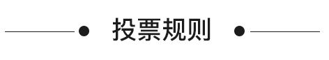

最美校园活动

开始时间 : {$sdate}
结束时间 : {$edate}

- 必须关注微信公众号“PU加”才可投票；
- 每人每天可投两票。关注公众号后可直接投一票，通过公众号登录PU可再投一票；
- 投票期间，不要取消对“PU加”微信的关注，否则会对最终票数有影响；
- 学校奖金池封顶数值为50万点；
- 奖金池金额由系统计算得出。以PU币形式发放，PU币：人民币=1：1（奖金池金额=奖金池点数数值/25）；
- 仅通过PU账号登录投票的用户才享有最终奖金池分配奖励的资格；
- PU在法律允许的条件下保留最终解释权。

通过“最美校园”的评比，旨在开展党的群众路线教育实践活动，培育和弘扬社会主义核心价值观。促进校园环境与人的和谐发展，强化环境育人，打造精品学校。同时丰富大学生“第二课堂”内容，培养当代大学生的学校归属感和荣誉感。
-
{{school.votes}}票